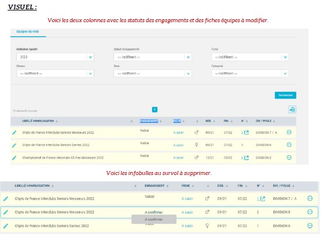
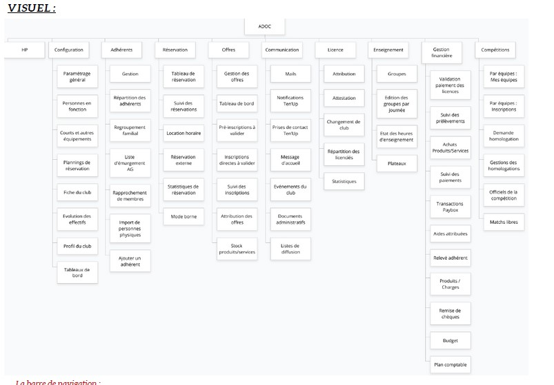
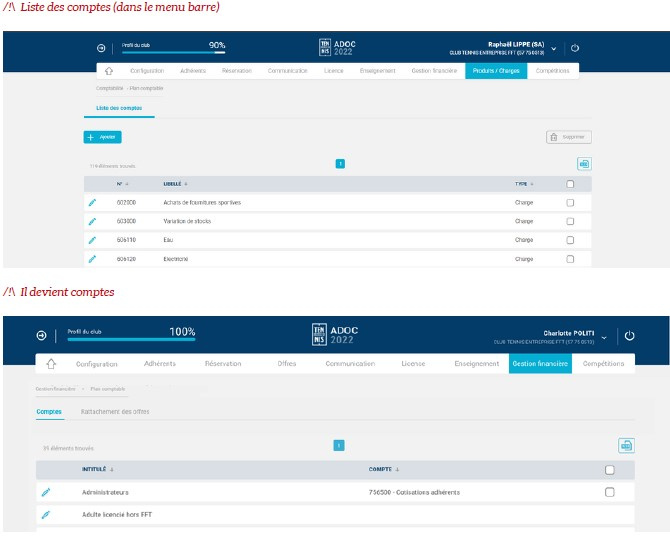
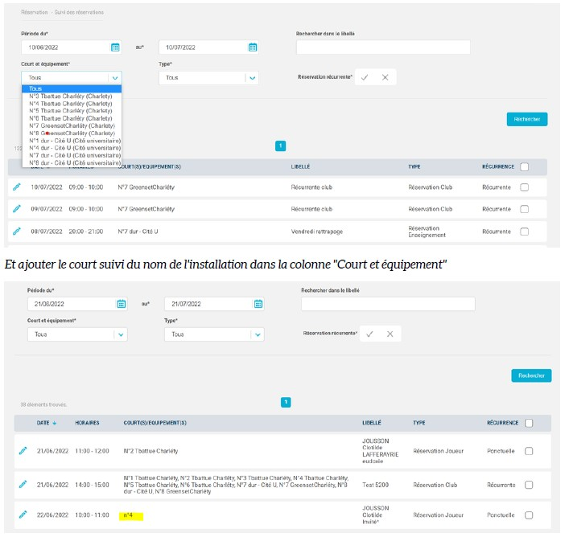
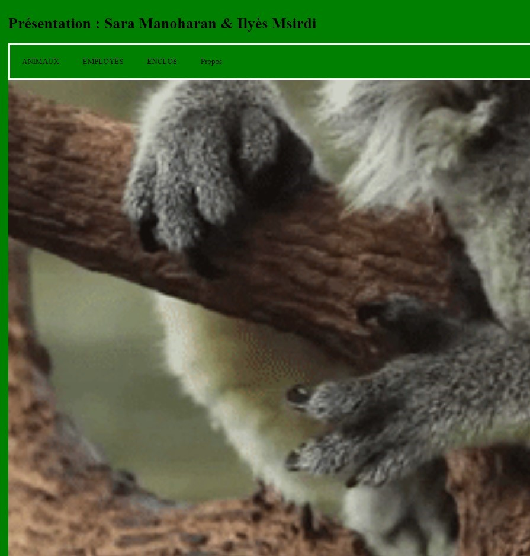
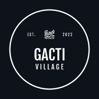
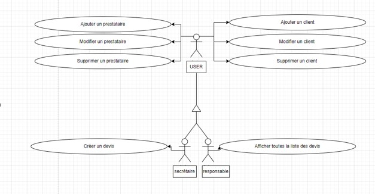
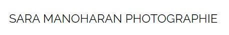

Sara Manoharan
Développeuse web
« Je m’appelle Sara Manoharan, je suis actuellement étudiante en deuxième année d'un BTS SIO (Services Informatiques aux Organisations) option SLAM (Solutions Logicielles et Applications Métiers) au Lycée Parc de Vilgénis - Massy. La promo 2021 - 2023.
Passionnée par le domaine du développement web & la cybersécurité, j’ai acquis, au cours de mon BTS, des connaissances en programmation, en cybersécurité et en administration de base de données.
Personne motivée et dynamique que j'ai décidé de m'en orientée dans cette voie. »
Mes Compétences :
- Informatiques
- Java / Python
- HTML / CSS / Php
- SQL / JavaScript
- Qualités
- Esprit d'équipe
- Dynamique & Autonome
- Relation client
Mes Formations :
- BAC STMG
-
Période : 2017 - 2020
Lycée Jean Macé, Vitry-sur-Seine
-------------------------------------------------
STMG : Sciences et Technologies du Managements et de la Gestion
Option : Système de l'information et de Gestion
-------------------------------------------------
Obtention du Baccalauréat (sans mention)
- DUT STID
-
Période : 2020 - 2021
IUT de Paris, Paris 16ème
-------------------------------------------------
STID : Statistiques mathématiques et probabilités
-------------------------------------------------
Pas valide
- BTS SIO
-
Période : 2021 - 2023
Lycée Parc de Vilgénis, Massy
-------------------------------------------------
SIO : Services Informatiques aux Organisations
Option : Solutions Logicielles et Applications Métiers
-------------------------------------------------
En cours
BTS SIO :
Option SLAM :
L’acronyme SLAM signifie « Solutions Logicielles et Applications Métier ». Voici quelques indications sur cette option du BTS SIO, ainsi des précisions sur cette formation et ses débouchés.
L’option SLAM est destinée aux étudiants qui s’orientent vers les métiers liés à la conception et la maintenance de programmes applicatifs. Grâce à des cours spécifiques, les diplômés seront capables de gérer un parc informatique ou d’administrer un réseau au sein d’une entreprise.
Ils pourront également gérer l’intégration, la sécurisation et la configuration des serveurs, mais aussi des postes clients et des équipements d’interconnexion.
Voici les débouchés avec un BTS SIO SLAM :
Option SISR :
L’acronyme SISR signifie « Solutions d’infrastructure, systèmes et réseaux ». Voici quelques indications sur cette option du BTS SIO, ainsi des précisions sur cette formation et ses débouchés.
L’option SISR est destinée aux étudiants qui s’orientent vers les métiers liés à la conception et la maintenance d’infrastructures réseaux. Assurer la sécurité, la maintenance et l’installation des réseaux et des équipements informatiques font partie des principales missions des futurs administrateurs, techniciens ou pilotes d’exploitation.
Des cours plus généraux viendront compléter la formation et apporter des compétences plus généralistes, permettant ainsi aux diplômés d’être opérationnels dans n’importe quelle entreprise.
Voici les débouchés avec un BTS SIO SISR:
STAGE
Lors de ma formation en BTS SIO, j'ai pu réalisé deux stages dans le domaine de l'informatique.
→ Assistante au pôle Systèmes d'informations & numérique - FFT
Domaine : Développement informatiques - programmations
Lieu : Boulogne-Billancourt
Date : 30 Mai 2022 - 08 Juillet 2022
Les tâches / missions attendu:

Mission n°1 - Suppression des info bulles ainsi que modification du texte
-A valider > Transmis
- Validé
- A valider > Transmise
- Validé > Validée

Mission n°2 - Modification du texte
* Etat de contrôle > Fiche du club

Mission n°3 - Modification du texte
Wording menu : Liste des comptes devient Comptes
Mission n°4 - Affichage et Modification de texte
→ Développeuse Web - World Parnassus
Domaine : Développement informatiques - programmations
Lieu : Paris Haussmann
Date : 03 Janvier 2023 - 17 Février 2023
Les tâches / missions attendu:
PROJET:
Lors de ma formation en BTS SIO, j'ai pu réalisé 4 projets dans le domaine de l'informatique.
Premier Projet : Gestion de Zoo (Avec Ilyess M.)
Une petite vidéo
Ce projet, devait à la fois servir de gestion pour les employé(e)s, animaux et enclos.
Deuxième projet : Projet Restaurant (Avec Alyssa P. & Benjamin V.)
Ce projet regroupe tous les restaurants de tout types présents dans chaque département.
Les restaurateurs qui souhaitent s'inscrire pour être présent sur la carte peuvent bénéficier d'un système de fidélité (points - réductions - parrainage).
Troisième projet : Projet Gacti

C'est un projet de gestion d'animation / d'activité.
Quatrième projet : Projet de gestion de prestation pour prestataire

C'est un projet de gestion pour prestataire. Ils peuvent réaliser / enregistrer des prestations pour des clients et générer des devis.
Projet personnelle : Sara Manoharan Photographie
Voir plus du projet !

C'est un projet que j'ai réalisé car j'aime la photographie.
Veille Technologique :
Pour mettre en place, j'ai utilisés les outils suivants :
Qu'est ce qu'une veille technologique ?
La veille technologique consiste à s’informer et / ou surveiller l'évolution de façon systématique sur les techniques les plus récentes et surtout sur leur mise à disposition (ce qui constitue la différence entre la technique et la technologie). La veille Technologique met en œuvre des techniques d’acquisition, de stockage et d’analyse d’informations. Ces informations peuvent concerner une matière première, un produit, un composant, un procédé, l’état de l’art et l’évolution de l’environnement scientifique, technique, industriel ou commercial de l’entreprise etc. Le but est de faire une évaluation de l'impact sur l'environnement et l'organisation.
Qu'est ce qu'est la cybersécurité ?
La cybersécurité sert à protéger les ordinateurs, les serveurs, les appareils mobiles, les systèmes éléctroniques, les réseaux et les données contre les attaques malveillantes. On l’appelle également sécurité informatique ou sécurité des systèmes d'information. Vous pouvez la rencontrer dans de nombreux contextes, de l'informatique d'entreprise aux appareils mobiles. Elle peut être divisée en plusieurs catégories:

Qu'est ce qu'est la cybermenace ?
Les cybermenaces évoluent rapidement, et le nombre de violations des données font qu'augmenter chaque année. Une cybermenace correspond au risque d’attaque de systèmes informatiques privés ou publics. La menace peut aussi bien être intérieure qu’extérieure, et provient de hackers (personnes spécialisées dans la manipulation d’un système informatisé qui est capables d’exploiter ses failles de sécurité).Les types de cybermenaces :
Les malwares sont des logiciels malveillants. Le malware, l'une des cybermenaces les plus courantes, est un logiciel créé par un cybercriminel ou un hacker pour perturber ou endommager l'ordinateur d'un utilisateur. Souvent propagé via la pièce jointe d'un email indésirable ou un téléchargement d'apparence sûr, le malware peut être utilisé par les cybercriminels pour gagner de l'argent ou lors de cyberattaques sur fond de politique.
Mais les méthodes utilisées sont :
Le sujet : " L'évolution des techniques d'attaque et de défense de sécurité informatique."
Les pirates informatiques sont à la recherche de nouvelles méthodes pour corrompre les systèmes informatiques et les données sensibles. Les professionnels de la sécurité informatique cherchent à améliorer les méthodes de détection et de prévention des cyberattaques.Les récentes cyberattaques :
Les projets de lois et réglementations mises en place :
Les sanctions / solutions :
Les avantages & inconvénients de la cybersécurité :
Tout d'abord, la cybersécurité on en retrouve partout !! Dans tous les logiciels, appareils et tous les domaines.
Les avantages :
Les incovénients :
Conclusion :
Pour les entreprises de petites ou / et grandes, la cybersécurité est devenue une source de préoccupation. La cybersécurité a ces avantages comme ces inconvénients. C'est un domaine essentiel pour toutes les entreprises. Pour le bon fonctionnement, une bonne stratégie efficaces doit être mit en place afin de protéger les systèmes ainsi que les données.Contact Me
Vitry-sur-Seine, France
+33 6 52 11 27 71
saramanoharan1@gmail.com